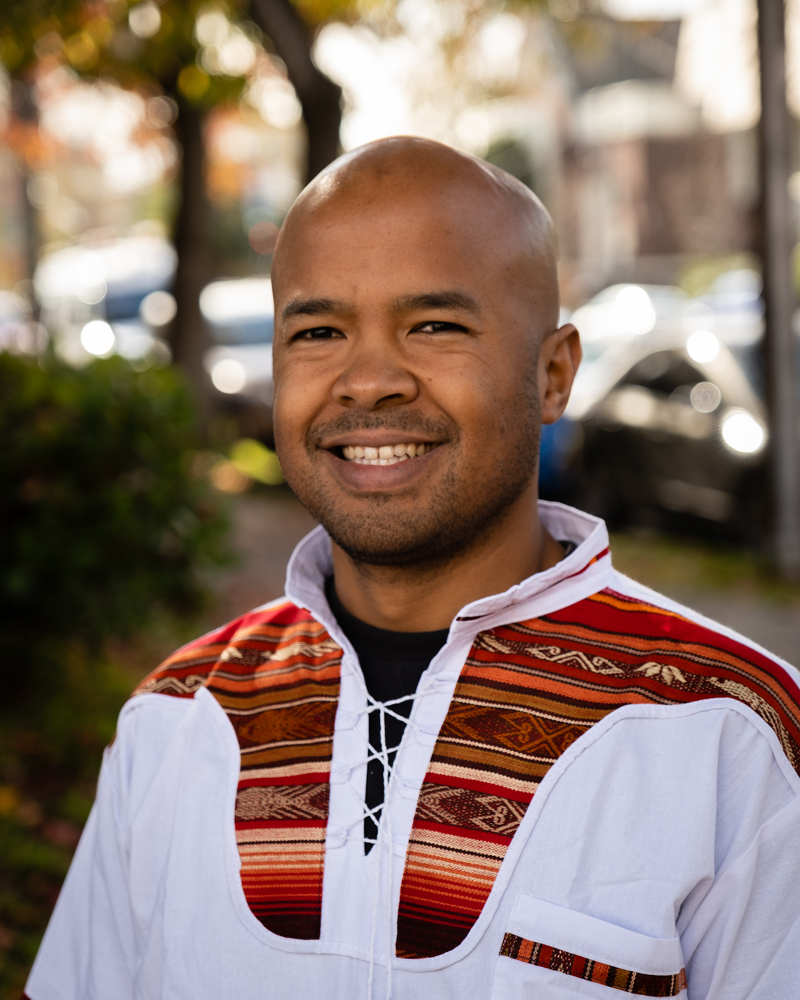
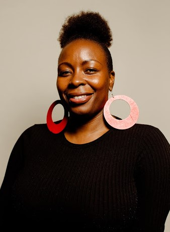
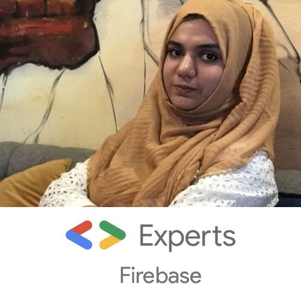
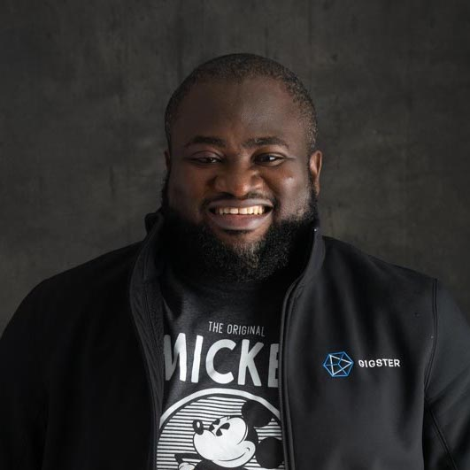
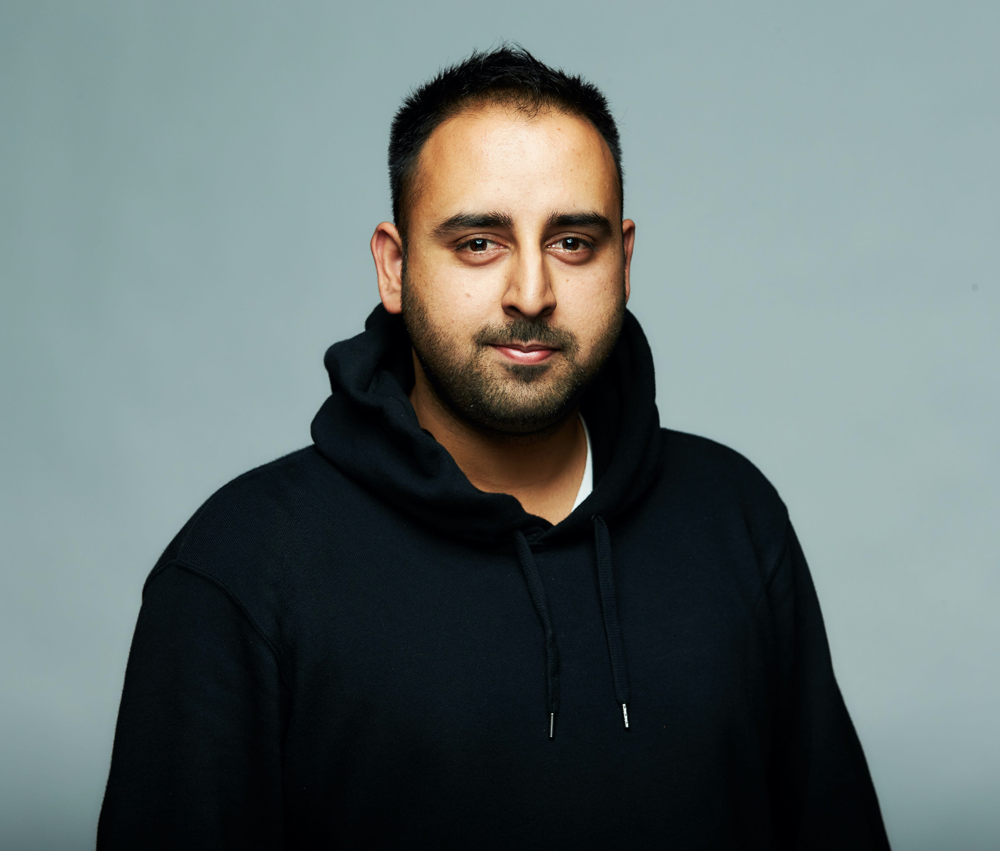
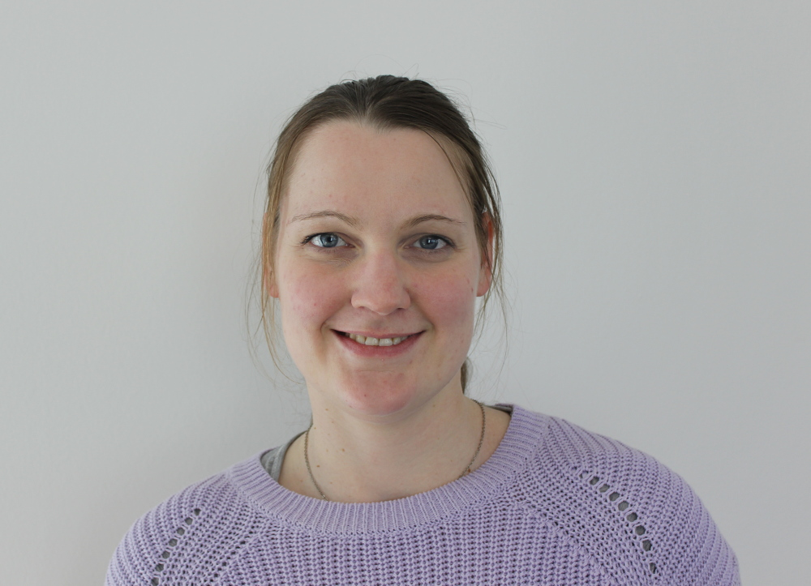
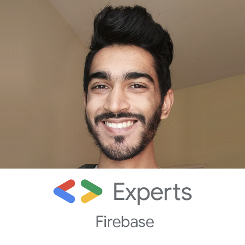

Chris Kiagiri
Customer Engineer Onboarding Lead, Google Cloud
About Chris Kiagiri
Chris Kiagiri is a Christian, a husband, a dad, a musician and has been working at Google since
2005.
As Technical Lead for Google Kenya, he worked on deploying Google Workspace (then known as Google
Apps) at universities through KENET under Google’s first partnership in Africa. He deployed the
first Google Global Cache servers in Africa at Internet Solutions (then known as Access Kenya). He
managed teams working on localization, Google Baraza and Google Trader, and later worked on
technical partnerships with the likes of Nation Media Group (YouTube), Safaricom (via Mobile Planet)
and Equity Bank (BebaPay), among others.
After 8+ years in Nairobi, he has continued to build on those experiences by working at YouTube
headquarters, then working on the relaunch of Android Pay as Google Pay, and most recently spending
the past two and a half years at Google Cloud, where he is currently the global program lead for
customer engineer onboarding.

Jacqueline Rajuai
Geo Program Manager, Google
About Jacqueline Rajuai
Jackie is currently a Geo Program Manager working on the Geo for Everyone team leading their
outreach strategy for Plus Codes - a project to provide street addresses for people or places that
don't have one. Jackie has been with Google for 12 years, and started in the Kenya office when
Google began building the first Google owned maps for Africa. She was part of the team that built
the first Maps which covered Kenya, Uganda and Tanzania. With the launch of the initial content in
these countries, she was involved in expanding Maps data coverage across Africa and launching Maps
domains in all of Africa. She was then involved in growing Maps capabilities by leading and
launching key features such as driving and walking directions; Google Maps for Mobile for Africa;
turn by turn voice navigation in select markets and the first dynamic transit layer in Africa for
Lagos City. She was also involved in growing the uses and use cases of Maps through the Ladies’ Map
Ups and Korogocho mapping project - both which were replicated in multiple countries.

Mariam Aslam
Google Developer Expert, Firebase
About Mariam Aslam
Mariam Aslam, BIT graduate from Yemen, recently got selected as First Female GDE in Pakistan in
Firebase category. A passionate Software QA Engineer. Founder of "QASocietyPK" and "WomeninQA", a
community that provides Software Testing and Automated Testing training. She has worked with
world-renowned software houses and corporate companies currently, working at Teradata as "Testing
Consultant"

Chuka Ofili
Full-stack Engineer & Software Architect, Gigster
About Chuka Ofili
Chuka is a software architect and engineer with experience in product architecture, design, devops
and full-stack development roles. He is currently the Founder & CEO at Interstellar Labs, a
technology company which owns the wyreout.com product (Affordable cross border payments using
blockchain). He’s also a full-stack engineer and software architect (contract) at Gigster, and
previously co founded FieldInsight (A tech startup in Nigeria that seeks to help organizations
across Africa get data to manage and monitor field workers through near real time visualizations).
Chuka is also a Google Developer Expert, Google Certified Professional Cloud Architect and a tech
Mentor on the Google for Startups program. He maintains a personal blog for sharing on
engineering/development & wherever possible speaks at conferences and events to share his knowledge.
Bernice Kibet
Networks Engineer, Google
About Bernice Kibet
A graduate of Jomo Kenyatta University with a Bachelors in Telecommunications and
Information Engineering.Currently a Networks Engineer at Google,my role involves supporting the
Google Global IP and Optical Network and previously an engineer at Safaricom Limited.Am passionate
about tech especially how tech can transform lives and create impact in different spaces.Am also
into Internet Governance and development and previously an internet society fellow (IGF and
EuroSSIG)as well as an IETF fellow.I'm also a mentor to many
Joy Ejiofoh
Program Manager, Andela
About Joy Ejiofoh
From a Marketing and Communication background, Joy is a Program Manager at Andela. I currently
manage the execution of partnerships programs in the Talent Partnerships Team through the Andela
Learning Community (ALC).
I currently manage the DevC Training with Andela and The #BuildforSDg Challenge that promotes
Innovation across all Developers in Africa.
Mercy Cheruto
Program Manager, Andela
About Mercy Cheruto
From a software development background, Cheruto is a Program Manager at Andela. My work mainly
involves managing the execution of partnerships programs in the Talent Partnerships Team through the
Andela Learning Community (ALC). I currently manage the Google Africa Developer Scholarship program
which has trained 30,000+ learners across Africa this year alone.

Nikita Poltoratsky
Google Developer Expert, Firebase
About Nikita Poltoratsky
I’m a Solution Architect at Akveo where I guide internal products and outsourcing clients on how to
build their systems. All my work experience is tightly coupled with building and dissecting
different systems. I’m an open-source contributor and tech author from Belarus. I passionate about
sharing knowledge and digging into the depths of technologies. I’m running an Angular Belarus
Community. Google Developer Expert.

Kshitiz Rimal
Google Developer Expert, Machine Learning
About Kshitiz Rimal
Kshitiz Rimal is an AI Developer from Nepal. He is Google Developers Expert (GDE) on Machine
Learning. He is also Intel AI Student Ambassador and currently a co-founder and Head of Research at
Artificial Intelligence for Development, a not-for-profit research organization in Nepal.
For the past 7-8 years he has been developing software and been a full-stack developer and UI/UX
designer. Recently, for the past 3-4 years he is involved with Artificial Intelligence and
specifically interested in a sub-field of AI called Deep Learning. He is one of the founding members
of the first community on Deep Learning established in Nepal. He has been developing projects around
Deep Learning, delivering hands-on workshops on that particular technology, organizing meetups,
presenting at international conferences and delivering AI training all around the world, which
includes, USA, India, Singapore, China, Switzerland, France and many others.
He is a 1st-runner up winner in an international AI competition on Disaster relief and response,
called "Call for Code 2018", organized by IBM for his project PD3R, which is on Structural
Retrofitting using AI. He recently delivered a demo presentation and co-instructed a hands-on
workshop at AI for Good Global Summit 2019, in Geneva, regarding his project called Cash Recognition
for Visually Impaired, which is under the theme of AI for Accessibility. He is passionate about AI
and working actively how it can be used for the good of mankind.

Martina Kraus
Google Developer Expert, Angular & Web Technologies
About Martina Kraus
Martina is a Google Developer Expert in Angular and Web Technologies, as a Senior Frontend
developer, she focuses on implementing highly scalable software-solution with WebAssembly and
Angular. Besides giving workshops as an Angular Trainer,she founded the JavaScript User group, is a
core member of the ngGirls Team and Co-organizes the local Angular Heidelberg Usergroup.

Nicolas Fränkel
Developer Advocate, Hazelcast
About Nicolas Fränkel
Developer Advocate with 15+ years experience consulting for many different customers, in a wide
range of contexts (such as telecoms, banking, insurances, large retail and public sector). Usually
working on Java/Java EE and Spring technologies, but with focused interests like Rich Internet
Applications, Testing, CI/CD and DevOps. Currently working for Hazelcast. Also double as a teacher
in universities and higher education schools, a trainer and triples as a book author.
Jente Rosseel
CEO, Elewa Company
About Jente Rosseel
Jente Rosseel is an experienced Computer Scientist and CEO of Elewa Company Ltd.
When not flying in between Europe and Kenya to lead Elewa, Jente specializes in Software
Architecture and clean code. He has published numerous open-source frameworks and has vast
experience as a software engineer in the financial, accounting and education sector. From running
coding bootcamps in Belgium, he now runs High-Potential Software Engineering Apprenticeships in
Kenya, raising young talent to advanced Engineering levels in under two years whilst supporting
startups across the world.
In his free time during non-COVID times, he doubles as a musician and can be found playing music in
bars across Nairobi.

Rosário P. Fernandes
Google Developer Expert, Firebase
About Rosário Pereira Fernandes
Rosário Pereira Fernandes is a Mobile App Developer at MozDevz and Google Developer Expert for
Firebase. Rosário has made many contributions to the Firebase Open Source Community and answered
hundreds of questions on StackOverflow. He generally helps developers improving the way they develop
their apps. When he's not doing one of these things, he enjoys playing video games.
Sachin Kumar
Google Developer Expert, Google Assistant
About Sachin Kumar
Google Developer Expert, Founding Team Member and Chief Technology Officer at TupeloLife (a
connected health company), Head of GDG Doha, Speaker, Writer, Blogger, Mentor, and Youtuber. He
developed an early fascination for technology and since then has always been on a quest to learn,
share, and innovate. He loves to share the experience and learnings of the products and services
with the community to inspire them to build a better future. He has vast experience in Voice
computing, AR/VR, Machine Learning, Cloud, IoT, mobile, web, and more. He also has experience
building solutions for the Healthcare industry and responsible for building and providing a National
Hypertension Program in the United States. Recognized as an expert in technology and leadership,
invited by world-class institutes and startup accelerators to participate in public lectures,
mentorship, and training.
Rishit Dagli
Organizer, Kotlin User Group Mumbai
About Rishit Dagli
TEDx, TED-Ed Speaker
Rishit Dagli is a High School student and is a TEDx, TED-Ed Speaker. To share his knowledge with
everyone he mentors at TensorFlow UserGroup Mumbai and organizes groups Global AI Mumbai and Kotlin
Mumbai and is an international speaker. He also works as a Google AI ExploreML facilitator. He is
also interested in research and has published multiple research papers in the field of AI and Maths.
He has also represented his country in various Hackathons and competitions and even won a few while
representing his country.